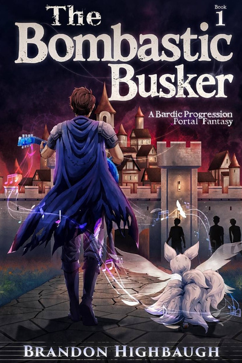

Join the Newsletter
New chapters, book news and the occasional tavern tale, straight to your inbox.
Contact Brandon
Questions, kind words, or rights inquiries. Brandon reads every message.

Read now on Royal Road
Chanter spent years playing guitar on street corners and in dive bars. Now he's a changeling in a world that hunts his kind, and his first song turns coins, darts and fists into explosives.
Read free on Royal RoadNew chapters every Monday, Wednesday and Friday.
Book One · Chapter One
A year of my life, signed away with a few simple gestures on a tablet while standing in a semi-enclosed booth that made a mockery of any sense of privacy. Countless chimes of affirmation sounded as others signed, each for their own reasons.
Me?
Just a failed musician with nothing left.
This opportunity was a parting gift from my late brother, Aiden. Of course I signed. Who wouldn't? Veil was marketed as a revolutionary, fully immersive VRMMO (Virtual Reality Massively Multiplayer Online Game). "A new world, full of potential," as all the advertisements said.
I would make the most of this alpha test. I remembered late-night conversations with Aiden fondly. He talked about his dreams and goals within Veil as I plucked out notes on my guitar. He’d been so excited to experience the fantastical new world. Not much was known about Veil, but he knew what he wanted to do. It was the same thing he did in real life, save those in need. His energy had been palpable, contagious.
I would do it, in honor of his memory. I would be a goddamned hero.
Cherry blossom petals drifted around me, generated from thin air about ten feet above where I stood. The blossoms remained on the ground for a few moments before dissipating.
I reached out and grabbed one between featureless fingers. Calluses built over years spent playing guitar were just… gone. My arms, legs—my whole body—was a smooth off-white.
I squeezed the blossom. The silky texture gained the faintest hint of moisture, releasing a familiar perfume. I rubbed it gently, bringing it to my face and inhaling. The realism surpassed my expectations.
The scent of cherry blossom petals reminded me of a festival my city held every spring. I’d been there with my younger brother just a few months ago.
I remembered us walking down a path, laughing and sharing a fried pastry we bought from a food vendor, planning our reunion a year and a half later when he would emerge from the alpha.
That was the day he told me he’d been accepted into Veil, one of 10,000 from millions of hopefuls. He was the whole reason I was here. I wasn’t chosen. I was, however, a close enough biological match to my brother that I had been placed on a reserve list as a backup.
A tragic loss of life, the news outlets called it. Dozens dead in a raging apartment fire. It had been his last night on duty at the fire department before taking an extended vacation to participate in the alpha. He’d managed to save a little girl. Her family had been at the funeral.
It felt like months had passed since that day, years even. It also seemed like yesterday. I squeezed the petal between my fingers harder, and it dissipated into tiny motes of pink light that drifted apart.
Text appeared, floating in front of me.
[Initiating integration into the world of Aestra…]
I looked around, and the text followed my field of vision, fixed in the center of my view.
It didn’t produce the motion sickness I’d come to expect from the heads-up display in other VR games. It felt natural, which was an odd feeling since text floating in the air was anything but.
After a few moments, the text blinked and was replaced with:
[Cognitive resonance with Aestra attuned!]
[Adjusting and Preparing Individual Cognitive and Physical Specifications…]
Cognitive and Physical Specifications? What an odd way of describing what seemed to be a character creation screen, but I chalked it up to being an immersive element, which was a nice touch.
A large, semi-transparent circular display populated in front of me, a variety of races from the shoulders up depicting Elf, Dwarf, Gnome, Human, and Beastkin. The races all had drop-down menus denoting sub-races. There were several other grayed-out boxes with shadowy figures labeled Unavailable. I mentally selected the drop-down for Elf, and a submenu appeared displaying three options: Wood Elf, High Elf, and Aquatic Elf.
They all looked like variations of the stereotypically slender, attractive elf found in most fictional worlds. Aquatic elves had a bluish tint to their skin and gills on their necks; their eyes had some kind of film over them.
I closed the submenu and went back, noticing an icon in a box on the bottom right. It stood out as the only box not containing a headshot. Three interwoven arches stood side by side, overlapping and drawn inward at the edges. They were a dull, bronze-like metallic color.
[Random - randomizes race and forgoes class selection. This option is not recommended for beginners! Class selection will be completed by an evaluation at the Adventurer’s Guild. Provides a small bonus to skill experience up to Mastery rank. Currently unavailable.]
I looked back at the other icons that were grayed out and marked as unavailable, momentarily confused because this random icon was not similarly grayed out. There was no "unavailable" text overlaying the symbol like the other unavailable options. The only indicator that it was not selectable was in the description. I pulled up the description to read it again, and the entire display flickered for a few seconds before distorting and minimizing. It was replaced with a wall of text, which spoke in my mind in an excited voice as I read it.
[You have selected "Random!" Brave choice! The world of Aestra is unforgiving and dangerous. You will begin with a bonus to skill advancement and an item: Chit of Admittance. Seek out the Adventurer’s Guild in your starting town for next steps!]
The field exploded into countless pixels that continued breaking apart into smaller pieces as the ground gave way beneath my feet and I fell backwards into blackness. It lasted less than a second, and I landed hard as the world reformed around me.
I lay in an alley between two buildings cobbled together from a variety of metals and wood. One of my feet sank in a filthy puddle of what I hoped was water. I sat up, looking around for my instrument in a moment of panic before remembering I was a world away.
"I didn’t choose ‘random,’" I grumbled. A sense of betrayal surged through me. There was no re-rolling characters in Veil, not in the alpha at least. The choice had been ripped from my hands by a system glitch.
My arms and hands were no longer the blank white they had been in the character creation screen. They were now sickly and pale, elongated, with nearly translucent nails. How would the frets feel under these fingers?
I wore filthy rags that could barely be called clothing. My shoes were nothing more than two strips of thick cloth sewn to pieces of leather, one of which was now soaked thanks to my unfortunate entrance.
As I climbed to my feet, a gruff voice from behind pulled me from my thoughts.
"What’s this, now?" The words ran together in a barely understandable slur.
A human man in a tattered leather vest and pants stood nearby. He stepped closer, worn boots crunching something underfoot. He brandished a wickedly curved dagger. The sense of betrayal drained from my body, replaced with a knot of tension and fear.
"It’s my lucky day. Guards’ll pay gold for your head, baby-snatcher." He sneered, stepping towards me.
I raised my hands and took a hesitant step back. A nameplate above his head read Jack in gently glowing blue lettering.
A notification appeared, and time seemed to slow as I read it. The text was accompanied by the same voice from character creation:
[New Quest! Evade capture. You have been recognized as a wanted race. Convince your assailant, through words or actions, not to turn you in.]
[Reward: Zinc Clothing Chest, Copper Adventurer’s Chest, Copper Coins x10, Experience Points x1,000.]
[WARNING! This is a compulsory quest. It will be accepted automatically. Failure will result in negative consequences, up to and including death.]
Patrons read chapters before they reach Royal Road and help keep Chanter playing.
Read ahead on Patreon patreon.com/brandonhighbaughNew chapters, book news and the occasional tavern tale, straight to your inbox.
Questions, kind words, or rights inquiries. Brandon reads every message.